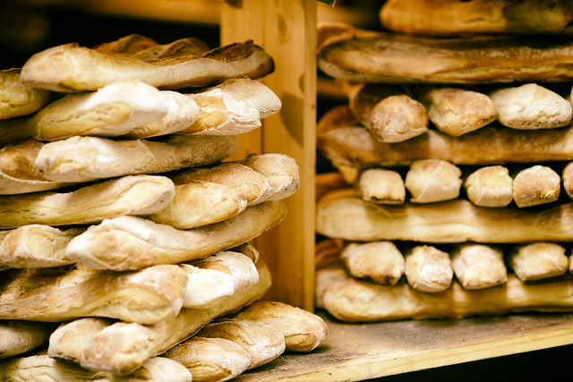

Give or take a tour in Berlin on the local Jitsi.

Download the scent of Berlin to 3D print at home.
Order a souvenir scent to match your molecule.
Learn more about the science of currywurst scent.

Give or take a tour in Madrid on the local Jitsi.

Download the scent of Madrid to 3D print at home.
Order a souvenir scent to match your molecule.
Learn more about the science of olive scent.

Give or take a tour in Paris on the local Jitsi.
Download the scent of Paris to 3D print at home.
Order a souvenir scent to match your molecule.
Learn more about the science of baguette scent.
Give or take a tour in Rome on the local Jitsi.
Download the scent of Rome to 3D print at home.
Order a souvenir scent to match your molecule.
Learn more about the science of seafood scent.

Give or take tour in Tallin on the local Jitsi.
Download the scent of Tallin to 3D print at home.
Order a souvenir scent to match your molecule.
Learn more about the science of forest scent.
Give or take a tour in Zurich on the local Jitsi.
Download the scent of Zurich to 3D print at home.
Order a souvenir scent to match your molecule.
Learn more about the science of the cheese scent.